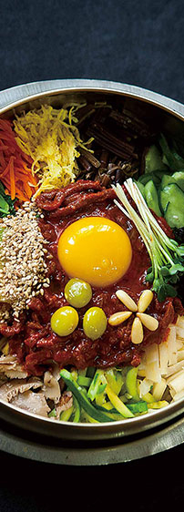

-
구절판
구절판찬합에 담아 먹는 우리나라 고유의 음식. 둘레의 여덟 칸에 각각 여덟 가지 음식을 담아 먹는다.
-
불고기
쇠고기를 얇게 썰어 양념장에 재웠다가 구워 먹는 음식으로 한국을 대표하는 전통음식 중의 하나이다.
-

비빔밥
고기와 나물 등과 여러 가지 양념을 넣어 비벼 먹는 음식으로 섣달 그믐날 해 먹던 음식 중 하나이다.
-
신선로
신선이 쓰는 화로라는 뜻으로 화로에 숯불을 담아 끓여 먹는 음식이다.